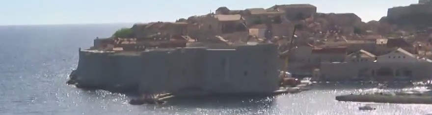

Loading the survey tour…
Camera 1, GeoOrigin and surveyed BXR points
Loading venue outlines

The same sector in the race recording · 190 s
Image-derived dashed outlines · illustrative diagram · ENU metres
Pause
Replay
Photo view
0 / 24 s